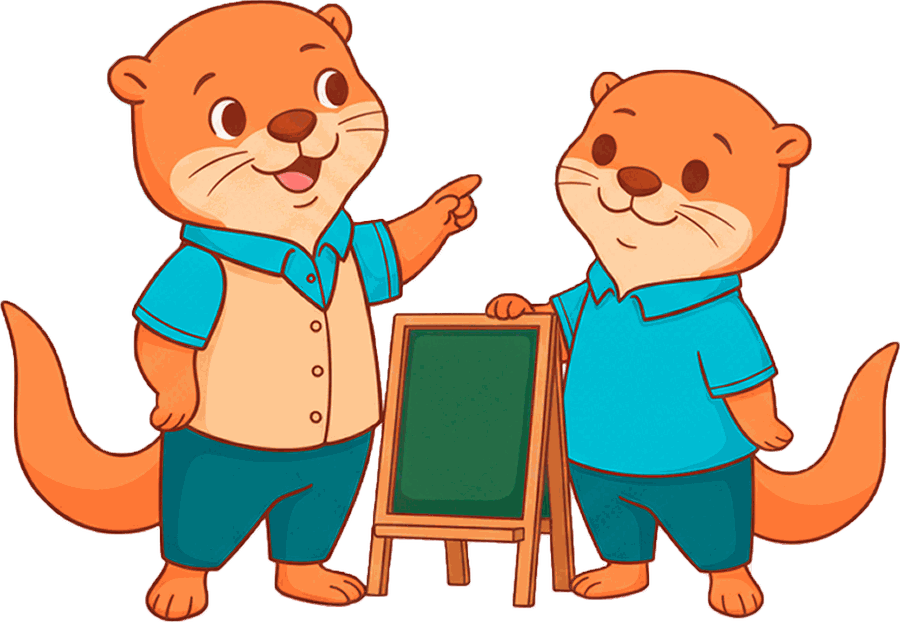
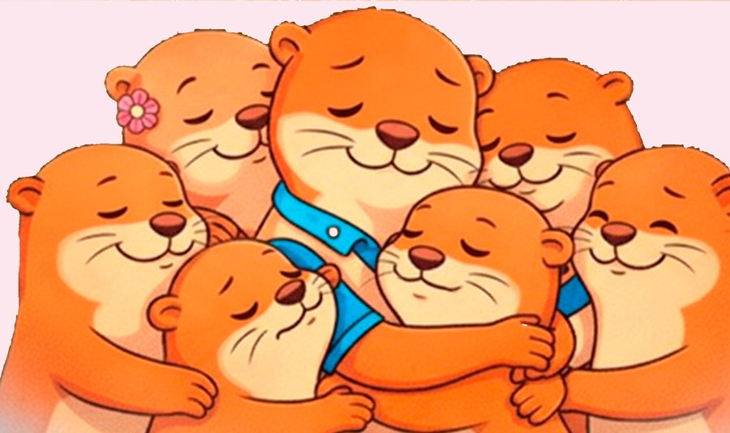

Centro Psicopedagógico · Paute, Azuay
Acompañamos el aprendizaje de tu familia
Apoyo escolar y clases personalizadas para estudiantes de colegio, universitarios y adultos, con un trato cercano y humano.

Nuestros servicios
Apoyo para estudiantes de colegio y para universitarios o adultos. Filtra según lo que necesitas.
-
Control de tareas
Acompañamiento y seguimiento diario para que las tareas se cumplan a tiempo.
Consultar por WhatsApp: Control de tareas (se abre en una pestaña nueva) -
Clases personalizadas
Clases uno a uno adaptadas al ritmo del estudiante: matemáticas, física, inglés y más.
Consultar por WhatsApp: Clases personalizadas (se abre en una pestaña nueva) -
Creación de ensayos
Apoyo para estructurar y desarrollar ensayos y trabajos académicos paso a paso.
Consultar por WhatsApp: Creación de ensayos (se abre en una pestaña nueva) -
Edición y corrección
Revisión de ortografía, redacción y formato para entregar textos claros y bien presentados.
Consultar por WhatsApp: Edición y corrección (se abre en una pestaña nueva)
¿Por qué Tejiendo Redes?
Tejer redes es crear vínculos de apoyo entre el estudiante, su familia y quienes le enseñan. Por eso nuestra mascota, Teji, es una familia de nutrias que nunca se suelta.
-
Trato cercano
Conocemos a cada estudiante y adaptamos el apoyo a sus necesidades.
-
Seguimiento constante
Acompañamos el proceso y mantenemos informada a la familia.
-
Presencial u online
Elige la modalidad que mejor se ajuste a tus horarios.

Preguntas frecuentes
¿Las clases son presenciales u online?
Ambas. Puedes venir a nuestro local en Paute o recibir la clase en línea, según te acomode.
¿Cuánto cuestan los servicios?
Cada caso es distinto, así que coordinamos el valor directamente por WhatsApp según el servicio y la frecuencia.
¿Puedo inscribirme a mitad del año lectivo?
Sí. Recibimos estudiantes en cualquier momento y adaptamos el plan a lo que estén viendo en clase.
¿Ayudan con trabajos universitarios?
Sí. Te acompañamos a estructurar ensayos y revisamos la redacción y el formato, explicándote cada cambio para que aprendas en el proceso.
Contacto
Completa el formulario y te abriremos WhatsApp con tu mensaje listo para enviar.
Ubicación: Paute, Azuay, EcuadorWhatsApp: 098 471 2983 (se abre en una pestaña nueva)
Instagram: @tejiendo_redes23 (se abre en una pestaña nueva)